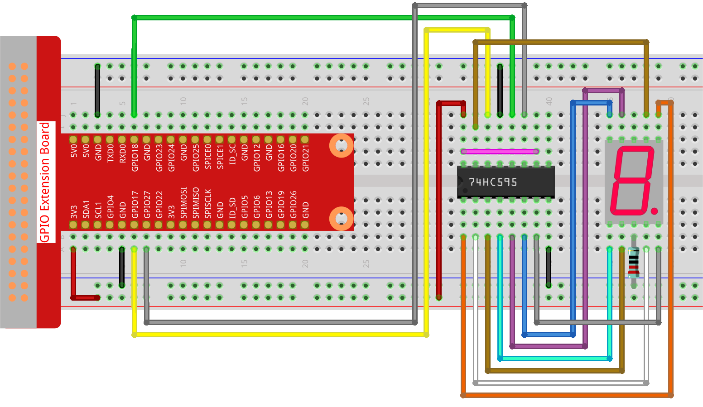

Note
Bonjour, bienvenue dans la communauté SunFounder Raspberry Pi, Arduino et ESP32 sur Facebook ! Plongez plus profondément dans le monde du Raspberry Pi, Arduino et ESP32 avec d’autres passionnés.
Pourquoi nous rejoindre ?
Support d’experts : Résolvez les problèmes après-vente et relevez les défis techniques grâce à notre communauté et notre équipe.
Apprendre & Partager : Échangez des astuces et des tutoriels pour développer vos compétences.
Aperçus exclusifs : Accédez en avant-première aux nouvelles annonces de produits.
Réductions spéciales : Bénéficiez de réductions exclusives sur nos produits les plus récents.
Promotions festives et cadeaux : Participez à des promotions spéciales et à des tirages au sort.
üëâ Pr√™t √† explorer et cr√©er avec nous ? Cliquez sur [Ici] et rejoignez-nous d√®s aujourd‚Äôhui !
1.1.4 Affichage 7 segments
Introduction
Nous allons essayer de contrôler un afficheur 7 segments pour afficher des chiffres de 0 à 9 et des lettres de A à F.
Composants nécessaires
Pour ce projet, nous aurons besoin des composants suivants.

Schéma de câblage
Connectez la broche ST_CP du 74HC595 au GPIO18 du Raspberry Pi, SH_CP au GPIO27, DS au GPIO17, et les sorties parallèles aux 8 segments de l’afficheur 7 segments.
Les données sont entrées sur la broche DS du registre à décalage lorsque SH_CP (l’entrée d’horloge du registre) est en montée, et sont envoyées au registre de mémoire lorsque ST_CP (l’entrée d’horloge de la mémoire) est en montée.
Vous pouvez ensuite contrôler les états de SH_CP et ST_CP via les GPIO du Raspberry Pi pour transformer l’entrée de données série en sortie de données parallèles, afin d’économiser les GPIO du Raspberry Pi et piloter l’afficheur.
T-Board Name |
physical |
BCM |
GPIO17 |
Pin 11 |
17 |
GPIO18 |
Pin 12 |
18 |
GPIO27 |
Pin 13 |
27 |

Procédure expérimentale
Étape 1 : Construisez le circuit.
Étape 2 : Accédez au dossier contenant le code.
cd ~/davinci-kit-for-raspberry-pi/python-pi5
Étape 3 : Exécutez le programme.
sudo python3 1.1.4_7-Segment.py
Après l’exécution du code, vous verrez l’afficheur 7 segments afficher les chiffres de 0 à 9, puis les lettres de A à F.
Avertissement
Si un message d’erreur apparaît tel que RuntimeError: Cannot determine SOC peripheral base address, veuillez consulter Si gpiozero ne fonctionne pas..
Code
Note
Vous pouvez Modifier/Réinitialiser/Copier/Exécuter/Arrêter le code ci-dessous. Mais avant cela, vous devez accéder au chemin source du code comme davinci-kit-for-raspberry-pi/python-pi5. Après modification, vous pouvez l’exécuter directement pour observer le résultat. Une fois vérifié qu’il n’y a pas de problème, utilisez le bouton Copier pour copier le code modifié, puis ouvrez le code source dans le Terminal via la commande nano et collez-le.
#!/usr/bin/env python3
from gpiozero import OutputDevice
from time import sleep
# Broches GPIO connectées au registre à décalage 74HC595
SDI = OutputDevice(17) # Entrée de données série
RCLK = OutputDevice(18) # Entrée d'horloge de la mémoire (registre)
SRCLK = OutputDevice(27) # Horloge de décalage du registre
# Codes hexadécimaux pour un afficheur 7 segments à cathode commune
segCode = [
0x3f, 0x06, 0x5b, 0x4f, 0x66, 0x6d, 0x7d,
0x07, 0x7f, 0x6f, 0x77, 0x7c, 0x39, 0x5e, 0x79, 0x71
]
def hc595_shift(data):
# Décale 8 bits de données dans le 74HC595
for bit in range(8):
# Définit SDI à haut ou bas selon le bit de donnée
SDI.value = 0x80 & (data << bit)
# Déclenche l'horloge du registre de décalage
SRCLK.on()
sleep(0.001)
SRCLK.off()
# Verrouille les données en déclenchant l'horloge de mémoire
RCLK.on()
sleep(0.001)
RCLK.off()
def display_all_on():
# Fonction pour allumer tous les segments (afficheur 7 segments à cathode commune)
all_on_code = 0x3f
hc595_shift(all_on_code)
print("Displaying all segments on")
try:
while True:
# Affiche chaque chiffre hexadécimal sur l'afficheur 7 segments
for code in segCode:
hc595_shift(code) # Transfère le code dans le 74HC595
# Affiche le code segmenté
print(f"Displaying segCode[{segCode.index(code)}]: 0x{code:02X}")
sleep(0.5) # Pause entre chaque affichage
except KeyboardInterrupt:
# Gère proprement l'interruption du script (ex. Ctrl+C)
pass
Explication du code
Ce snippet importe les classes nécessaires au projet.
OutputDevicedegpiozeroest utilisé pour contrôler les composants matériels connectés aux broches GPIO, etsleepdetimeest utilisé pour ajouter des délais.#!/usr/bin/env python3 from gpiozero import OutputDevice from time import sleep
SDI, RCLK et SRCLK correspondent respectivement aux broches d’entrée de données série, d’horloge mémoire et d’horloge de décalage du 74HC595.
# Broches GPIO connectées au registre à décalage 74HC595 SDI = OutputDevice(17) # Entrée de données série RCLK = OutputDevice(18) # Entrée d'horloge de la mémoire (registre) SRCLK = OutputDevice(27) # Horloge de décalage du registre
segCodeest un tableau contenant les codes hexadécimaux pour chaque chiffre à afficher sur l’afficheur 7 segments.# Codes hexadécimaux pour un afficheur 7 segments à cathode commune segCode = [ 0x3f, 0x06, 0x5b, 0x4f, 0x66, 0x6d, 0x7d, 0x07, 0x7f, 0x6f, 0x77, 0x7c, 0x39, 0x5e, 0x79, 0x71 ]
Cette fonction décale 8 bits de données dans le 74HC595. Elle entre chaque bit dans
SDI, déclencheSRCLKpour décaler le bit, puis utiliseRCLKpour verrouiller les données.def hc595_shift(data): # Décale 8 bits de données dans le 74HC595 for bit in range(8): # Définit SDI à haut ou bas selon le bit de donnée SDI.value = 0x80 & (data << bit) # Déclenche l'horloge du registre de décalage SRCLK.on() sleep(0.001) SRCLK.off() # Verrouille les données en déclenchant l'horloge de mémoire RCLK.on() sleep(0.001) RCLK.off()
Cette fonction allume tous les segments de l’afficheur en envoyant un code spécifique à
hc595_shift.def display_all_on(): # Fonction pour allumer tous les segments (afficheur 7 segments à cathode commune) all_on_code = 0x3f hc595_shift(all_on_code) print("Displaying all segments on")
La boucle principale envoie chaque code de
segCodeà l’afficheur, avec un délai entre chaque affichage.try: while True: # Affiche chaque chiffre hexadécimal sur l'afficheur 7 segments for code in segCode: hc595_shift(code) # Transfère le code dans le 74HC595 # Affiche le code segmenté print(f"Displaying segCode[{segCode.index(code)}]: 0x{code:02X}") sleep(0.5) # Pause entre chaque affichage
Cette partie du code gère proprement l’interruption du script (ex. Ctrl+C).
except KeyboardInterrupt: # Gère proprement l'interruption du script (ex. Ctrl+C) pass